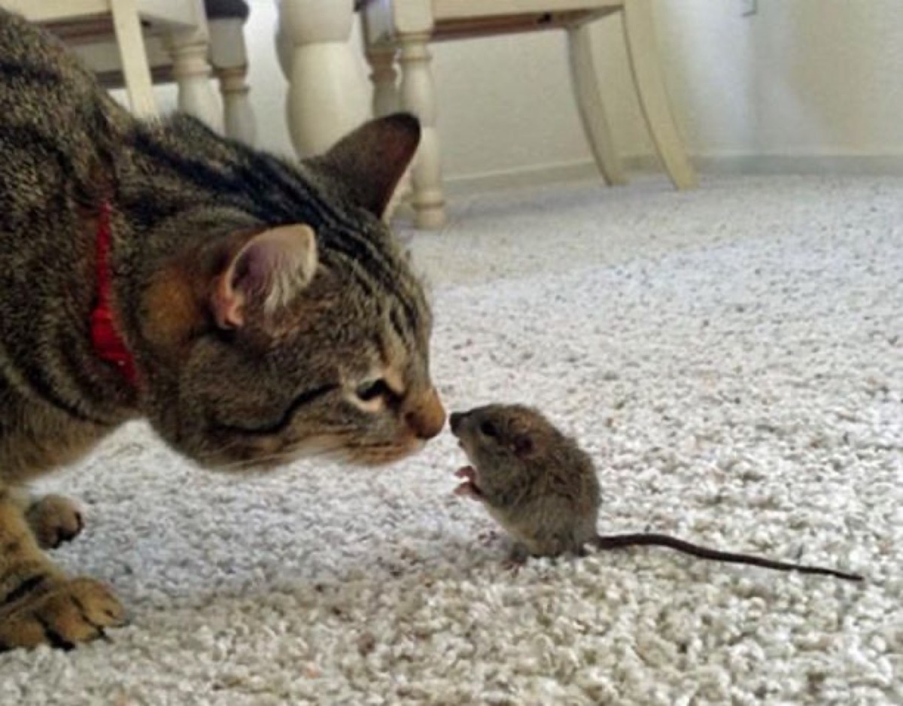

Întâlnire diplomatică
Ce surpriză, de mult vroiam să vă-ntâlnesc!
Și nu că mi-ar fi frică
Dar tot neamul șoricimii vă iubesc
Vă iubesc doamnă pisică
Sunteți înaltă, frumoasă
Și ce nas fermecător
Blana parcă-i de mătasă
Și ochii de bronz strălucitor
Dacă-mi dau eu bine seamă
Din bataia inimii
Cred ca sunteți buna mamă
Poate aveți și copii
Pot să vă cer un favor
După ce ne vom juca
Să mă lăsați să cobor
Colo jos la casa mea
Dintr-o singură mișcare
Șoricelul diplomat
Cât ai zice trei, dispare!...
Iar pisica a ramas c-un mieunat...
Vasile Groza
Apare și în: Poezii cu animale.